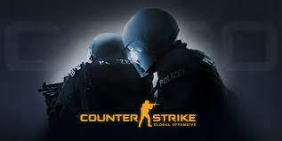

First-person shooter games, or FPS games, is a popular subgenre of video games that provide the player a first-person viewpoint so they can experience the game world as if they were the character. Players often fight opponents and accomplish goals in fast-paced, intense gameplay while utilizing a variety of firearms and other weapons. These video games frequently have multiplayer options that let players compete against one another in teams or individually, which increases their appeal of competitions. FPS games like Call of Duty, Halo, and Counter-Strike and Valorant are some well-known examples.
FPS games typically have engaging multiplayer modes as well, which can provide an unique and enjoyable social experience. Gamers can interact or compete with one another to accomplish goals, developing relationships and rivalries with other players in the process. As a result, FPS games may develop a strong feeling of community and are a great option for gamers who value socialising and teamwork.

Counter-Strike: Global Offensive (CS:GO) is a popular first-person shooter game that was released in 2012. To win rounds in CS:GO, players must either fulfil objectives and eliminate the opponents. Players can join either the Counter-Terrorists or the Terrorists.
There are several different game modes available in CS:GO, including Casual, Competitive, and Deathmatch. Players can easily join and quit games in Casual mode, but Competitive mode offers a more structured, serious gaming environment with ranked matching. Players can revive after being eliminated in deathmatch mode, which makes it a useful option for honing abilities and trying out new weaponry.
The focus placed on communication and teamwork in CS:GO is one of its unique attributes. To complete tasks and win the game, players must cooperate, and effective communication is essential. Players can use in-game currency acquired through playing to buy a range of weapons and other items in the game.

Valorant is a popular multiplayer first-person shooter game developed and published by Riot Games. Due to its distinctive gameplay and competitive aspects, it immediately developed a following after its initial release in 2020. In Valorant, players can choose to join the attacking or defending side. To win rounds, they must accomplish goals or eliminate the rival squad.
Valorant features a diverse cast of characters, known as Agents, each with their unique set of abilities and roles on the battlefield, this is one thing that makes it unique and gives it a selling point over other fps games. Players must outmanoeuvre and outplay their opponents by utilising their skills, talents, and weaponry.
Agents play a significant role in what separates Valorant from other first-person shooter games. Each Agent in Valorant has their own unique set of abilities, which can have a big impact on gameplay and strategy in contrast to other FPS games where players often have access to the same weapons and equipment.
With its distinctive Agents and abilities, anti-cheat system, and focus on teamwork and communication, Valorant provides a highly strategic and competitive gaming experience.